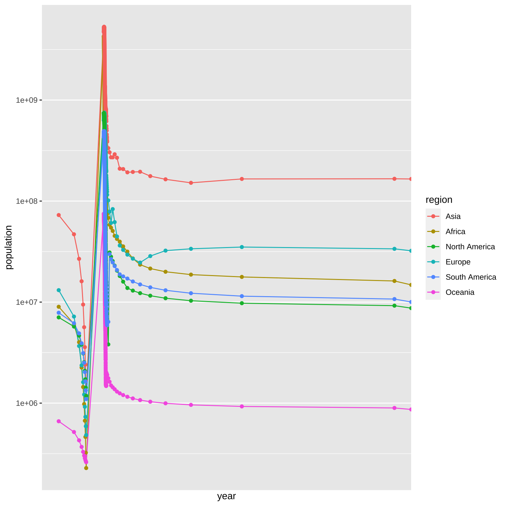
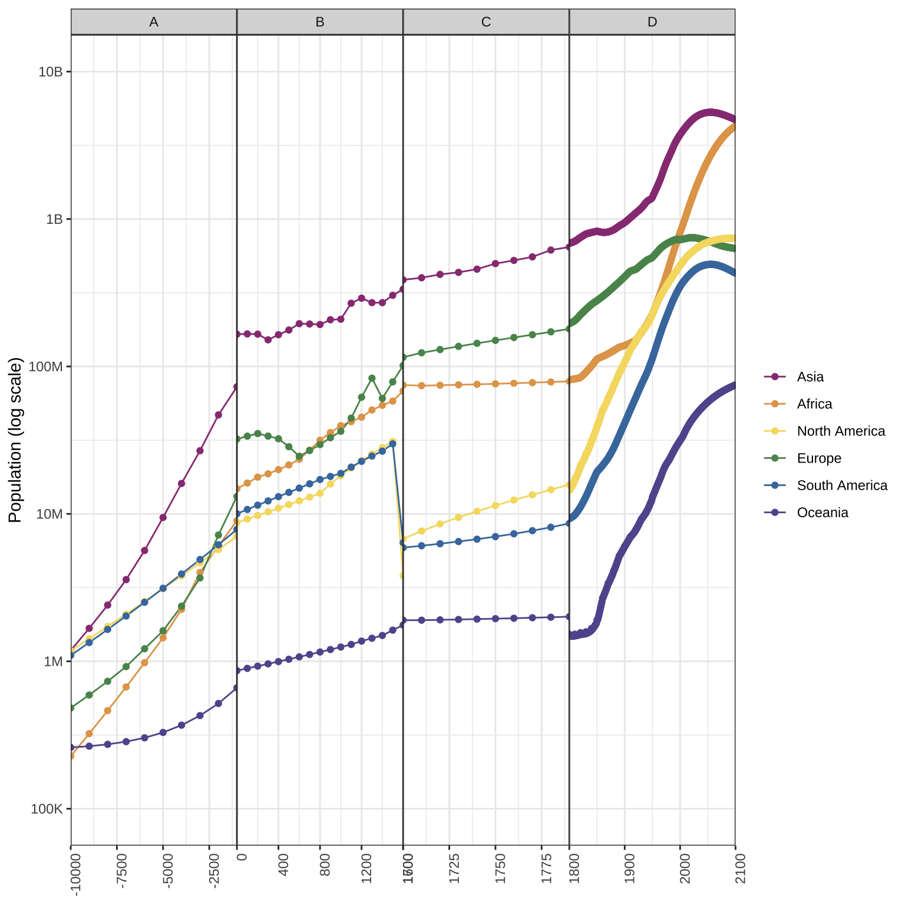
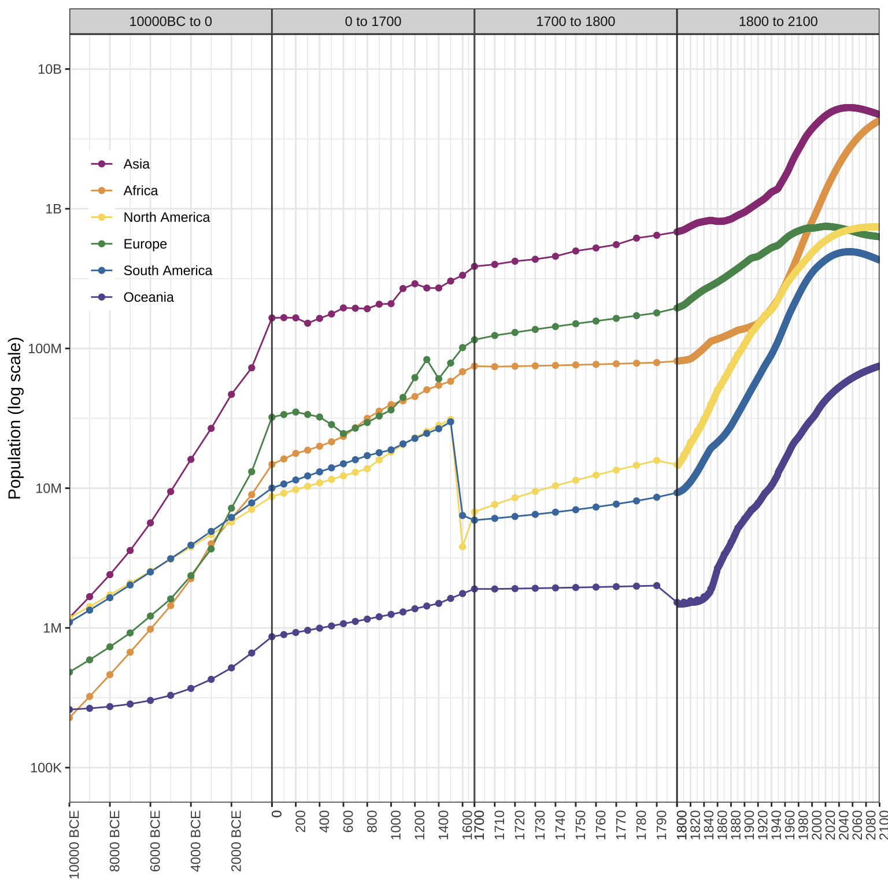
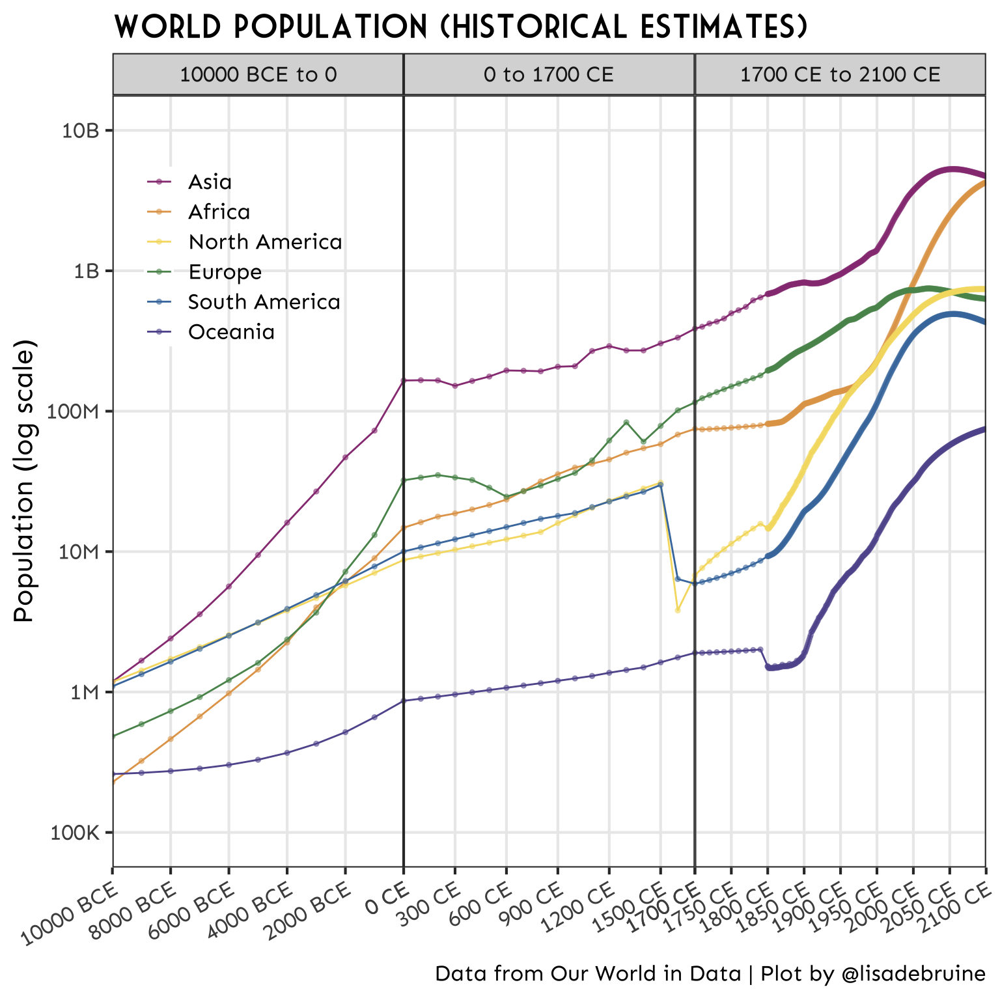

3 Historical
3.1 Population Data
I got this dataset from Our World in Data.
cols(
Entity = col_character(),
Code = col_character(),
Year = col_double(),
`Population (historical estimates and future projections)` = col_double()
)The column names need some cleaning (I prefer to work with column names that are all lowercase with no spaces), and I don’t need some of the data.
Code
| region | year | population |
|---|---|---|
| Afghanistan | -10000 | 14737 |
| Afghanistan | -9000 | 20405 |
| Afghanistan | -8000 | 28253 |
| Afghanistan | -7000 | 39120 |
| Afghanistan | -6000 | 54166 |
| Afghanistan | -5000 | 74999 |
3.2 Select relevant data
I just want to plot the population for the 6 major world regions, so I’ll filter that and make a quick line plot to see what I’ve got.
3.3 Transform y-axis
The population growth is pretty exponential at the end, so a log transformation of the y-axis might help.
3.4 Region order
It would make more sense if the legend was in the same order as the lines, so I’ll turn that column into a factor ordered by the population at the latest year.
I’ll also add a point for each year with data.
3.5 Variable x-axis
The data collection isn’t even at all. The years go every 1000 from -10000 to 0, then every 100 from 0 to 1700, then every 10 from 1700 to 1800, then every year from 1800 to 2021.
[1] -10000 -9000 -8000 -7000 -6000 -5000 -4000 -3000 -2000 -1000
[11] 0 100 200 300 400 500 600 700 800 900
[21] 1000 1100 1200 1300 1400 1500 1600 1700 1710 1720
[31] 1730 1740 1750 1760 1770 1780 1790 1800 1801 1802
[41] 1803 1804 1805 1806 1807 1808 1809 1810 1811 1812I tried a few x-axis transformations, and they’re not straightforward because the x-axis crosses 0, which most transformations can’t handle. This was one of the silliest.
Code

So I’ll add a new column that specifies which time period they’re in. I’ll replace this text later, so it’s probably easiest to give them alphabetic labels now.
3.6 Clean Up
Now we’re getting somewhere, but still need to clean this up a lot. I’m going to remove the panel spacing and expansion so the plots touch each other. I’ll also customise the breaks and labels for the y-axis to make that easier to understand, and customise the colours (I do love a rainbow).
Code
# custom colours
rainbow <- c("#983E82","#E2A458","#F5DC70","#59935B","#467AAC","#61589C")
ggplot(world_regions, aes(x = year, y = population, color = region)) +
geom_line() +
geom_point() +
facet_grid(~time_period, scales = "free_x") +
scale_x_continuous(name = NULL,
expand = expansion(0)) +
scale_y_log10(name = "Population (log scale)",
breaks = 10^(5:10),
labels = c("100K", "1M", "10M", "100M", "1B", "10B"),
limit = c(1e5, 1e10)) +
scale_color_manual(name = NULL,
values = rainbow) +
theme_bw() +
theme(axis.title.x = element_blank(),
axis.text.x = element_text(angle = 90, hjust = 1),
panel.spacing.x = unit(0, "cm"))
However, the borders of each time period don’t meet. I can fix that by duplicating the border years and assigning them to the previous time period.
Let’s also fix the facet labels. The function as_labeller() lets you translate between the data labels and custom labels for facets. And set some custom colours and custom x-axis breaks and labels. I moved the legend inside the plot to give the plot more horizontal room.
Code
# custom facet labels
tp_labels <- c(
A = "10000BC to 0",
B = "0 to 1700",
C = "1700 to 1800",
D = "1800 to 2100"
)
# custom x-axis breaks and labels
x_breaks <- c(seq(-10000, -2000, 2000),
seq(0, 1600, 200),
seq(1700, 1790, 10),
seq(1800, 2100, 20))
x_labels <- c(paste(seq(10000, 2000, -2000), "BCE"),
seq(0, 1700, 200),
seq(1700, 1790, 10),
seq(1800, 2100, 20))
ggplot(world_regions2, aes(x = year, y = population, color = region)) +
geom_line() +
geom_point() +
facet_grid(~time_period,
scales = "free_x",
labeller = as_labeller(tp_labels)) +
scale_x_continuous(name = NULL,
breaks = x_breaks,
labels = x_labels,
expand = expansion(0)) +
scale_y_log10(name = "Population (log scale)",
breaks = 10^(5:10),
labels = c("100K", "1M", "10M", "100M", "1B", "10B"),
limit = c(1e5, 1e10)) +
scale_color_manual(name = NULL,
values = rainbow) +
theme_bw() +
theme(axis.text.x = element_text(angle = 90, hjust = 1),
panel.spacing.x = unit(0, "cm"),
legend.background = element_rect(fill = "transparent"),
legend.position = c(.1, .75) )
3.7 Change time periods
I changed by mind about 1700 to 1800. This plot gives it too much prominence. so I’ll combine it with 1800+. It looked weird to specify “BCE” only for the years before 0, so I added “CE” (Common Era) to the years after 0 and adjusted the angle and number of labels to make it easier to read.
Code
# recode time period to 3 periods (merge C and D)
world_regions3 <- world_regions2 %>%
mutate(time_period = recode(time_period, A = "A", B = "B", C = "C", D = "C"))
# remake facet labels
tp_labels <- c(
A = "10000 BCE to 0",
B = "0 to 1700 CE",
C = "1700 CE to 2100 CE"
)
# remake x-axis breaks and labels
x_breaks <- c(seq(-10000, -2000, 2000),
seq(0, 1500, 300),
seq(1700, 2100, 50))
x_labels <- c(paste(seq(10000, 2000, -2000), "BCE"),
paste(seq(0, 1500, 300), "CE"),
paste(seq(1700, 2100, 50), "CE"))Code
ggplot(world_regions3, aes(x = year, y = population, color = region)) +
geom_line() +
geom_point(size = 1, alpha = 0.5) +
facet_grid(~time_period,
scales = "free_x",
labeller = as_labeller(tp_labels)) +
scale_x_continuous(name = NULL,
breaks = x_breaks,
labels = x_labels,
expand = expansion(0)) +
scale_y_log10(name = "Population (log scale)",
breaks = 10^(5:10),
labels = c("100K", "1M", "10M", "100M", "1B", "10B"),
limit = c(1e5, 1e10)) +
scale_color_manual(name = NULL,
values = rainbow) +
labs(title = "World Population (Historical Estimates)",
caption = "Data from Our World in Data | Plot by @lisadebruine") +
theme_bw(base_size = 16) +
theme(text = element_text(family = "Sen"),
axis.text.x = element_text(angle = 30, hjust = 1),
panel.spacing.x = unit(0, "cm"),
legend.background = element_rect(fill = "transparent"),
legend.position = c(.15, .8),
panel.grid.minor = element_blank(),
plot.title = element_text(family = "Market Deco"))